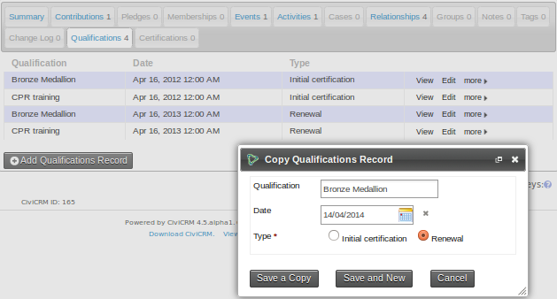
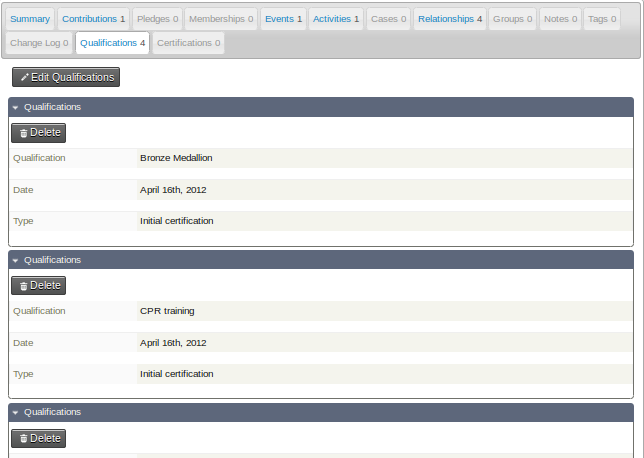
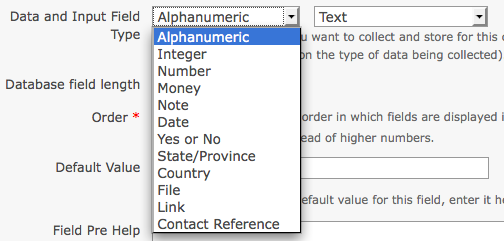
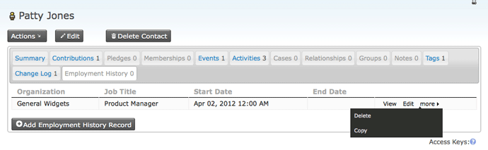
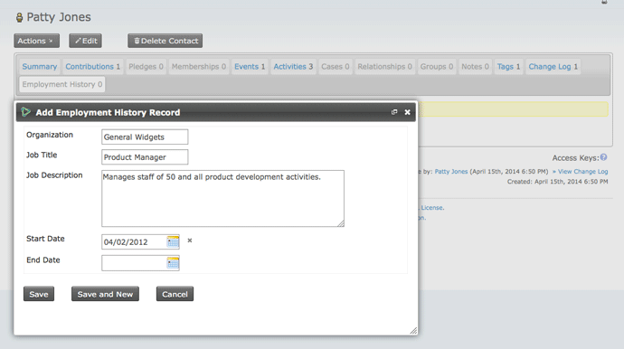
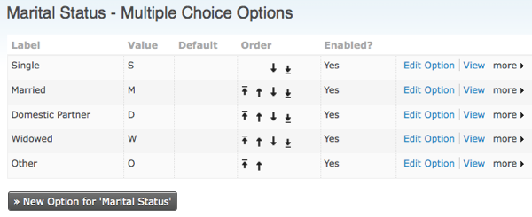
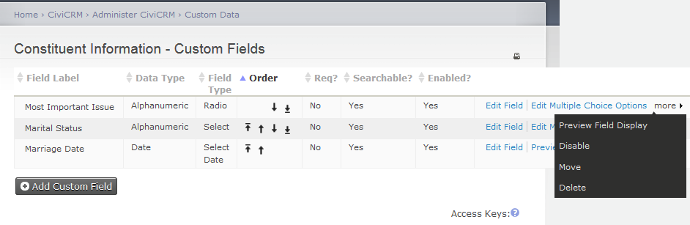

Custom field settings¶
Use this reference to check what each custom field set and field option controls. Custom fields belong to custom field sets; set-level options apply to the set, while field options apply to individual fields.
Custom field set options¶
Set Name¶
For a set displayed inline, Set Name appears as the field set’s legend. For a set displayed as a tab, it appears as the navigation tab label.
Used For¶
Used For determines which records can have the set’s fields. The following are some of its options; custom fields can be added to more than 20 different entities.
| Option | Where the fields apply |
|---|---|
| Activity | All activities or a specific activity type, such as Meeting or Phone Call. |
| Addresses | An address block, allowing an administrator to create additional address-related fields. |
| Contacts | All contacts. |
| Contributions | All contributions or a specific Financial Type, such as Donations or Event Fees. |
| Events | All events or a specific event type, such as Conference or Fundraiser. These fields apply to the event, not its participant registration records. |
| Grants | Grants. |
| Groups | Group settings. These fields are not searchable. |
| Household | Household contacts. |
| Individual | Individual contacts. |
| Memberships | All membership records or a specific membership type. |
| Organization | Organization contacts. |
| Participants | Participant registration records. You can apply fields to all registration records, a specific participant role or a specific event. |
| Pledges | Pledges. |
| Relationships | All relationship records or a specific relationship type, such as “Spouse of” or “Employee of”. |
It is also possible to add custom fields to entities not listed under Used For, including your own custom entities. For an entity that does not support custom fields, those fields might not appear in its forms, but they will be available in SearchKit.
Used For can be changed only while no data has been recorded with the set. Until then, use More > Settings for the set under Administer > Customize Data and Screens > Custom Fields. Once data exists, you cannot change the set’s scope.
Order¶
Order controls how multiple custom field sets are presented. Lower numbers, such as 1 and 2, appear above higher numbers, such as 8 and 9.
Multiple record fieldsets¶
By default, a custom field set has a one-to-one relationship with the record it is attached to. For example, a set holding a person’s height and eye colour can have one record for each Individual contact. A set holding educational history might instead need several records for one person, each with a subject, institution and grade.
Does this Custom Field Set allow multiple records? allows multiple records for a set, subject to these limits:
- The setting applies to the whole set, not individual fields.
- Multiple-record field sets can be added only to Contacts, not to Activities, Contributions or other entities.
- Multiple-record data cannot currently be exported.
Before using a multiple-record set, consider whether the information should instead be an activity with custom data. An educational degree is one possible example.
Display options¶
The display style tab is visible only for custom data fields attached to contacts. Contact field sets can appear inline on the summary screen or in their own tab. You can change the display style later. How often you need the data and the size of the set may help you choose.
You can also have a set start collapsed. Initially, only its title appears and its fields are hidden, reducing the space used by an infrequently accessed set. A similar collapsed setting is available for custom data in Advanced Search.
There are two tab styles:
-
Tab with table gives a concise overview of the set’s data. New records can be added and existing ones edited in pop-up windows. Under more, “copy a record” lets you copy a record and change just one or two fields before saving it as a new record.

-
Tab displays data in a format similar to the inline style.

Is this Custom Field Set active?¶
When a set is active, its fields can be viewed and changed. When it is inactive, they remain in CiviCRM but are hidden from the user interface. Individual fields can also be made inactive in their own settings when the set is active.
For example, you could import historical membership records from an MS Access database with a unique Access ID. A custom field could retain that ID even if it has no direct use in CiviCRM. You could then leave the Activate option unchecked to hide the field while keeping its value for a later investigation or comparison with a printed record.
Is this Custom Field Set public?¶
When a set is marked public, its fields appear on public-facing pages. For example, fields intended for an event information page should be in a public set; fields holding administrative information about the event should be in a set that is not public.
This setting applies to every field in the set. Individual fields cannot be marked public or not public.
Pre-form Help and Post-form Help¶
Use these settings for instructions about the entire set. Pre-form Help appears above the form field, and Post-form Help appears below it.
Custom field options¶
Field label¶
Field label is the text shown next to the field and used as its label in data exports. In a profile, you can override it with a different Field Label. This lets you use an administrator-facing label in the field settings and a more user-friendly one in the profile.
Type¶
Type combines the format of data to store, selected from the left menu, with the way users interact with it, selected from the right menu. CiviCRM offers a dropdown list of data types when you create a field.

| Data type | Available input types or behaviour |
|---|---|
| Alphanumeric | Text, Select, Radio, Yes and No, Check-box, Multi-select, Advanced Multi-select or Autocomplete select. |
| Note | A longer, multiple-line text box: plain text or rich text with a WYSIWYG editor that allows HTML. |
| Integer | A whole number entered through a text box, select box or radio list. |
| Number | A number that can include decimals, such as 3.175, entered through a text box, select box or radio list. |
| Money | A number treated according to the local currency configured in CiviCRM’s administrative pages; entered through a text box, select box or radio list. |
| Date | A date, and optionally a time, entered with a calendar widget. You can set a selectable range of years before and after the current date. |
| State/Province | Locations configured in CiviCRM’s Localization settings at Administer > Configure > Global Settings > Localization; offered as a select box or multi-select box. |
| Country | A list of geographical locations, offered as a select box or multi-select box. |
| File | A browser control for selecting and uploading a file. |
| Link | An active internet hyperlink. |
| Contact Reference | An autocomplete widget for an existing CiviCRM contact. |
The Alphanumeric input types behave as follows:
- Text provides a simple area for entering text.
- Select is a dropdown allowing one selection.
- Radio shows all choices at once and allows one selection.
- Yes and No is a radio list with two contrasting options.
- Check-box allows multiple selections.
- Multi-select shows choices in one box and allows multiple selections using control+click.
- Advanced Multi-select shows two lists side by side; items can be moved between them.
- Autocomplete select fills in a selection when the text entered uniquely identifies it.
The input type affects searching. For example, Check-box fields support both OR and AND searches in Advanced Search, while Multi-select fields do not.
Display in Table?¶
Display in Table? appears only for a field in a multiple-record set displayed as Tab with table. It is checked by default. Uncheck it to omit a less important field from the table, for example when a large data set makes the table too wide for the screen.

A field omitted from the table is still available when you add a record or view, edit or copy a row.

Database Field Length¶
Database Field Length sets the number of characters a field can contain. Normally, leave it at the maximum. Shortening it might improve performance or reduce storage for an extremely large field set, but will make no difference for most users.
Order¶
Order controls where a field appears within its set. Set it in the field edit form or use the up/down icons in the main field listing. New fields appear at the bottom by default.
Default Value¶
Where applicable, Default Value is automatically shown or selected when someone opens a form containing the field.
Pre-form Help and Post-form Help¶
Use help text when the label does not make clear what to enter or when you need to explain how to use the field. Pre-form Help appears above the field; Post-form Help appears below it.
This help appears wherever the field is used on administration pages. It also becomes the default help text when the field is assigned to a profile. The person creating the profile can change or remove that text without changing the original custom field definition.
Required¶
When Required is selected, the form cannot be submitted without a value for the field. An error message directs the person to complete it.
If a field should be required only in a particular profile, leave this setting unchecked and set Required in that profile instead.
Optimize for Search¶
Optimize for Search creates a database index for the field. This can speed up searches substantially, but takes more storage and may slow the system when the data is updated frequently.
An index is recommended for fields often used in searches or as smart group criteria, such as identifiers or values selected from a list. It is likely to be inefficient for frequently updated text, such as notes or comments, that is rarely searched for an exact value.
This option changed in CiviCRM 5.75. Before that version, it was called “is searchable?” and also determined whether a field appeared in Advanced Search and Reports. From 5.75, all fields are available in Advanced Search and Reports.
Active¶
Active determines whether an individual field is enabled or disabled when CiviCRM displays it to users. The field set has its own active setting.
View Only¶
View Only makes a field visible but not editable. It can hold imported data that users should be able to consult but not change, or data entered by a method set up by your developer rather than through the user interface.
Multiple choice options¶
For Select, Radio, Check-box, Multi-select and Advanced Multi-select fields, you can reuse an option set created for another custom field or create a new set. Options can be entered when you create the field or later. Each option’s label appears on the form; its value is stored in the contact record.
If you reuse an option set, CiviCRM notifies you when a change will affect several fields. For a new set, you can initially enter up to ten choices in a table. After saving the field, Edit Multiple Choice Options lets you add an unlimited number of further choices. At Administer > Customize > Custom Data > View and Edit Custom Fields > Edit Multiple Choice Options, you can later add choices or change their labels, order and active status.

You can mark one choice as the default. Inactive choices are hidden when the field is presented.
Managing fields in a set¶
At Administer > Customize Data and Screens > Custom Data, View and Edit Custom Fields shows the fields in a set. Available actions include editing settings, editing multiple choice options where applicable, previewing, disabling, deleting and Move.

You can move fields between sets used for all contacts or for contact sub-types. Otherwise, you can move fields only between sets of the same type.